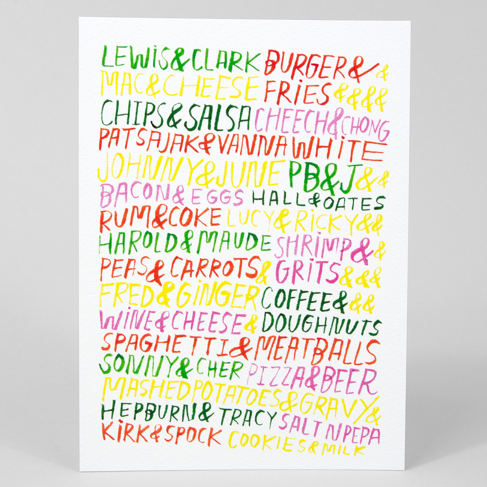

Cultural Blog: Week 5
Lessons in Pairing
August 15, 2014
August 15, 2014
"Ok, just go ahead and type in that H1 heading on Line 35," I said.
"I already did," he said. "I already finished the body text. Why can't you see it?"
"I can't even see your video..."
"Here, lemme just--"
"Do you see that?"
"Can you just stop driving and let me type something?"
"Maybe we should just take a break."
The dialogue of a bad pairing session reads like the back half of a shitty rom-com. Like in any relationship, communication is everything. Even when you and your pair are on the same page (mentally, not digitally), the barrier of a computer screen, a few hundred miles, and an almost certainly malfunctioning Stypi page can ruin everything. That said, pair programming works in the absence of logistical challenges. Now that I've had 5 weeks of practice, I'd like to shed some light on lessons I've learned, because I've learned something every time so far. Here are a few important ones:
- Success doesn't mean completing the task at hand. It means learning something, whether it is about the curriculum or about yourself.
- Pair programming succeeds, regardless of a discrepancy in skill level. If you aren't as experienced as your pair, you will hopefully learn what you need to work on. If you are smarter than your pair, you will be forced to teach them the concepts they don't understand. Teaching, of course, is the highest form of learning.
- That said, if you aren't a good sport, #2 becomes almost impossible. One of my first times pairing, I realized my pair and I weren't going to finish our challenge - it just wasn't going to happen. I was not prepared enough relative to my given partner. I really try to remember the sense of gratefulness I felt as my pair took the time to work with me on my level. It would have been so easy to just blow me off or get frustrated. Whenever I find myself in the "more experienced" spot, I really try to emulate that cooperativeness.
- Pairing might STILL be difficult... Everyone works and learns differently. As we learned with our thinking style tests, you can't please everyone with the same lesson, and the same goes for pairing. Some people will need to write down their thoughts and some will always need to be typing on Stypi.
- ...but it's NOT an excuse to give up. It just takes compassion. Let's go back to relationships. When I ask my grandparents, joyfully married for 60 years, the key to a successful relationship, the answer is simple: compassion. I think the most helpful comments I've received are the ones thanking me for slowing down and being empathetic to the pair's needs. It's usually natural for me to race through a problem once I have a grasp of it, so having confirmation that I DON'T do this when I pair, is good to know.